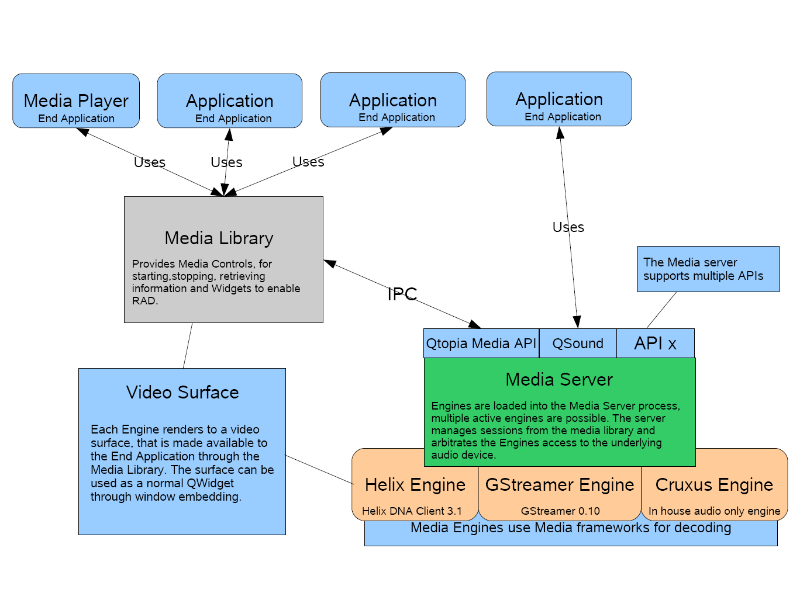

|
Home · All Namespaces · All Classes · Grouped Classes · Modules · Functions | |
The Qt Extended Multimedia Framework provides a generic API to manage audio/video playback, handling priority requests, suspending and resuming as needed automatically.

Features provided by the Qt Extended Multimedia Framework include:
On startup the Qt Extended Media Server loads plugin media engines installed, these engines are implementations of 3rd party multimedia engines like helix and gstreamer using QMediaEngine. The video rendering is done using a QWSEmbedWidget in the player see QMediaVideoWidget ::createVideoWidget() for details on this. On the server side a QVideoFrame allows the media server to render the video to the screen. For details on implementation of the engine API refer to the Simple Media Engine example used in the tutorial.
Cruxus is a light weight media engine that supports audio only playback allowing the developer to add support for audio codecs without having to write there own media engine, instead just implementing QMediaDecoder. Currently cruxus has plugins for wav, ogg (tremor), mp3 (libmad) and midi (libtimidity). See (src/plugins/codecs/wavplay, src/3rdparty/plugins/codecs/libmad,tremor,libtimidity for implementations.
Note: libmad is not enabled by default due to licensing issues. When fast response times on playback are required it is recommended that cruxus engine is used for wav support.
For details on implementation of the player side API refer to the Simple Media Player example used in the tutorial.
As of 4.4.1 release QAudioInterface provides an easy way for the application developer to allow Qt Extended to control the audio of there applications.
For Example:
QAudioInput *audio;
QAudioInterface *audiomgr;
First we create out audio input class.
audio = new QAudioInput(this);
Then we create out control class using the default Media as the domain.
audiomgr = new QAudioInterface("Media", this);
Then we tell the control class what audio it has to control, if you are not using a QAudioInput or QAudioOutput class then you will need to connect to the QAudioInterface::audioStarted() and QAudioInterface::audioStopped() signals to implement the open and close functionality.
audiomgr->setInput(audio);
User requests to start recording.
audiomgr->audioStart();
When all the handshaking is done, conflicting instances are stopped or paused and audio state is changed to support audio request QAudioInterface::audioStarted() signal is emitted to begin reading the input.
On play request:
On record request:
| Copyright © 2009 Trolltech | Trademarks | Qt Extended 4.4.3 |